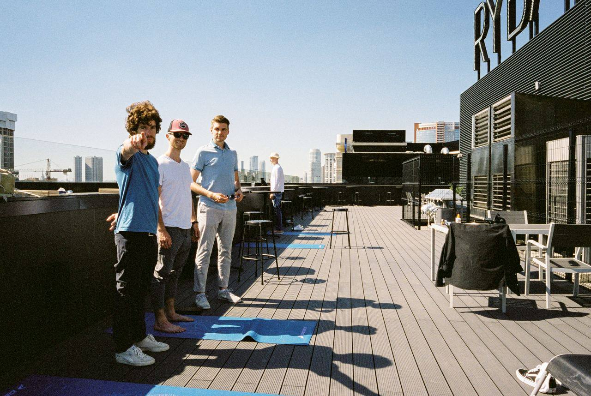

№ 001Дело вокруг личностиСтарт: ты Финиш: твоё дело
Точка отсчёта
Выйти из сеткии построить дело вокруг себя
Чужие задачи, чужие цели, чужой ритм — так живёт большинство. Уникалисты строят дело вокруг себя: своих талантов, опыта и того, что не могут не делать.
В одиночку такой переход занимает около двух лет. Рядом с теми, кто уже идёт свой путь, — быстрее.
Деньги есть, но ты не понимаешь, кто ты и чего ты хочешь.
Есть аудитория, но не хочешь быть инфоцыганом.
Многое умеешь, но не можешь сказать, что из этого — твоё.
Не можешь назвать свои достижения.
Уже не первый год хочешь начать своё дело, но страшно уйти в никуда.
Тяжело назвать цену или взять деньги за свою работу.
Не знаешь, в чём ты хорош(а), и не знаешь, как представляться.
Делаешь что-то для себя и никому не показываешь.
Боишься, что осудят знакомые, которых ты последний раз видел 10 лет назад.
Узнаёшь себя хотя бы в трёх? Твои трудности не уникальны. Свой путь проще найти рядом с теми, кто уже идёт свой.
Создаёт дело жизни вокруг своей уникальности
Тех, кто живёт и строит дело вокруг своей личности — талантов, навыков, опыта и интересов, — я называю уникалистами.
Уникалист делает то, что у него легко получается, но делает это изо всех сил, потому что не может не делать. И на этом строит своё дело вместо поиска хайповой ниши.
Это может быть дизайн, предпринимательство, работа с людьми или что-то другое. Но это всегда про радость от процесса без ожидания награды за результат. Иными словами — это про творчество как способ бытия.
Как перейти из работы в чужой системе к жизни вокруг творчества?
По статистике такой переход занимает около двух лет при движении в одиночку, но может проходить как существенно быстрее, например с гидом в группе, так и затянуться на семь лет.
Он состоит из нескольких этапов:
Самоопределение › первые деньги › создание продукта › построение системы
Если честно, то я и сам сейчас в переходе на стадии создания продукта. В середине 2024 я вышел из операционки бизнеса, который до этого строил восемь лет.
Я понял, что мне нравится работа с людьми. Даже будучи в своём бизнесе, я создавал разные клубы — по стоянию на гвоздях, −21 °С и первую версию уникалистов — и сам платил за участие в других клубах.

Твой SOK — из прощального письма клуба
«Рома, благодарим тебя за все те дни, когда SOK был частью твоей жизни, за каждое мероприятие, начиная от гвоздестояния, заканчивая твоим новым, очень важным и классным проектом — уникалисты.
Читать письмо целикомСвернуть
Для нас это была не просто коллаборация, не просто проведение клубных мероприятий, а именно создание безопасного и спокойного места, где каждый может не бояться быть собой и говорить о важном.
Ты уникальный, и благодаря тебе и твоим стараниям каждый в этом чате знает, что он тоже особенный.
Мы не прощаемся и искренне верим, что это были не последние твои мероприятия с нами, не последний твой клуб, ты всё так же остаёшься неотъемлемой частью SOK, частью нашей общей души.
Верим в тебя, в твои победы и ждём тебя в гости.»
Поэтому прямо сейчас я сам создаю дело вокруг своей личности на том, что мне нравится делать.
Я помню, каково это — делать первые шаги. Поэтому объединяю тех, кто готов отправиться в путь вместе.
Роман Гришин
Уникалист. Предприниматель
Бизнес, который я основал, вырос до 300 млн ₽ в год и работает без меня.
Строю дело вокруг личности и объединяю тех, кто делает то же самое.
У тебя уже есть своё дело, но ты чувствуешь себя не на своём месте
Ты делаешь что-то ценное для друзей, знакомых и близких бесплатно. Зарабатываешь чем-то другим и даже не думаешь, что твои навыки могут быть большой ценностью.
Умеешь строить процессы, продавать, нанимать, считать юнит-экономику и не только. Не знаешь и не разрешаешь себе знать, что тебе действительно нравится делать как процесс.
Дверь Б
У тебя есть свой блог/аудитория/занятость, но нет выстроенного дела
Ты не хочешь быть инфоцыганом. И при этом хочешь зарабатывать на том, что тебе нравится делать.
Обычно на этом всё и застревает. Непонятно, какой продукт можно сделать для других. Хотя продукт у тебя уже есть: ты делаешь что-то для себя и не показываешь никому, даже собственной аудитории.
Ни один из вас никогда не строил дело вокруг себя. Бизнес часто учат строить по готовым лекалам, а дело вокруг личности требует индивидуального подхода.
Как со мной можно поработать
Вместе с другими — когда нужны те, кто идёт туда же. Один на один — когда нужно разобраться самому. Это не дешёвая и дорогая версия одного и того же.
Бесплатная консультация, 40 минут, онлайн. Определим, о чём ты мечтаешь и что нужно делать, чтобы к этому прийти. Я скажу, что увидел, и предложу то, что подходит, — индивидуальную работу, среду или ничего из этого.